Auftragszentrale: einmal alles durchspielen
Hallo Edin, hier gehst du einmal Schritt für Schritt alles durch — vom Auftrag bis zur Rechnung, am Handy. Nimm dir etwa 20 Minuten und spiel einen erfundenen Auftrag durch, genau wie auf den Bildern. So lernst du jede Funktion einmal kennen.
Lieber gleich selbst machen? Im Übungsauftrag steht bei jedem Schritt genau, was du tippst, eintippst oder einsprichst — einmal komplett bis zur bezahlten Rechnung.
So liest du die Bilder: Wo ein roter Rahmen mit Nummer 1 ist, tippst du. Mehrere Nummern heißt: nacheinander, oder du hast die Wahl.
Vorher kurz wichtig:
- Öffne die App über den Link, den Matthias dir geschickt hat. Nur damit laufen Sprache, Foto-Auswertung und KI wirklich. Du erkennst es daran, dass ganz unten auf der Startseite „Zugangscode entfernen“ steht.
- Keine echten Kundendaten eingeben — erfinde Namen und Adressen, so wie im Beispiel.
- Alles, was du eingibst, liegt nur auf diesem Gerät. Was du am Handy machst, siehst du am PC nicht (und umgekehrt).
- Die Rechnung wird in der Probe nicht wirklich verschickt. Später macht das sevDesk.
1Auftrag erfassen
Ein Kunde hat angerufen oder dir einen Zettel gegeben, und ihr habt den Auftrag vereinbart. Den hältst du jetzt fest.
Startseite: „Auftrag erfassen“
Auf der Startseite (unten links „Home“) tippst du oben auf Auftrag erfassen 1.
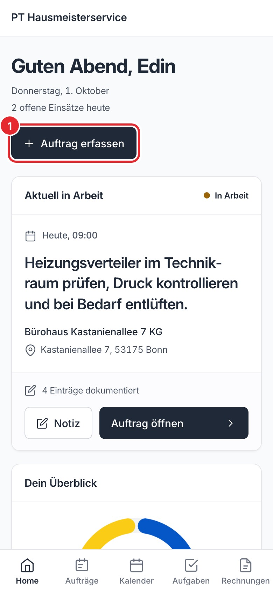
Drei Wege — du suchst dir einen aus
- 1Foto / Screenshot: Zettel abfotografieren oder einen WhatsApp-Screenshot nehmen. Die App liest die Angaben heraus.
- 2Manuell eingeben: selbst eintippen.
- 3Einsprechen: einfach sagen, z. B. „Diakonie, Musterweg 12, Tür nachstellen, morgen acht Uhr“.
Alle drei landen im selben Formular. Im Beispiel nehmen wir das Foto.
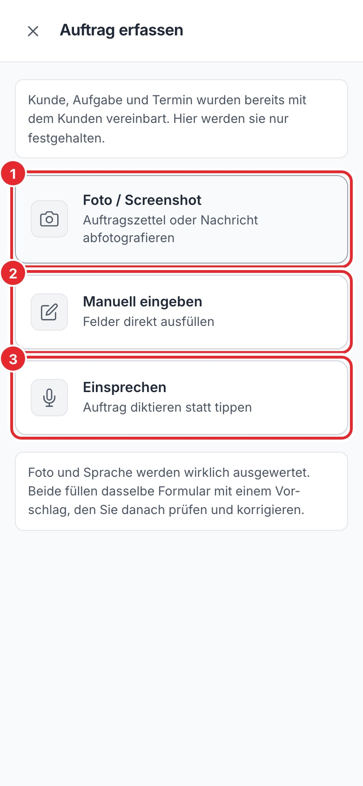
Foto machen oder aus der Galerie
1 Foto aufnehmen öffnet die Kamera, 2 Aus Galerie wählen nimmt ein Bild, das du schon hast (z. B. Screenshot).
Danach auf Bild auswerten tippen.
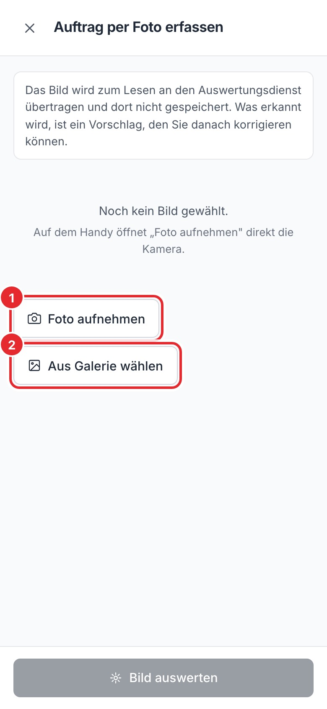
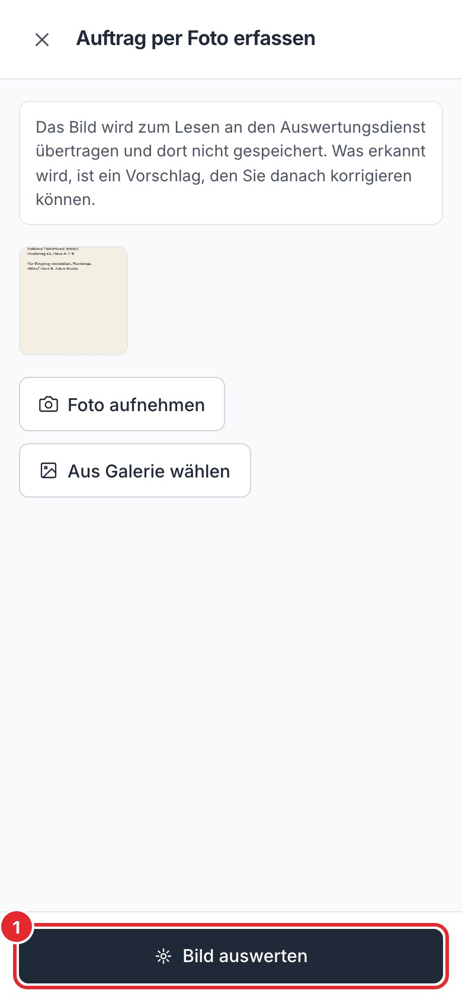
Prüfen, was erkannt wurde
Die App zeigt dir, was sie gelesen hat — und was sie nicht erkannt hat („Nicht erkannt — bitte eintragen“). Sie rät nie. Passt es, tippst du Angaben übernehmen 1.
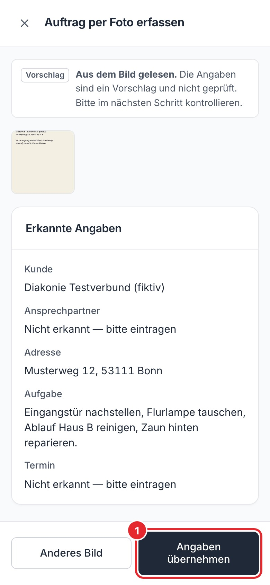
Fehlendes nachsprechen
Im Formular fehlt hier noch der Termin 1. Du kannst ihn eintippen — oder oben auf Per Sprache ergänzen tippen und einfach sagen, was fehlt: „Termin morgen um acht, Ansprechpartner Herr Neumann, Telefon …“.
Der Knopf wird rot, solange du sprichst. Nochmal tippen = fertig.
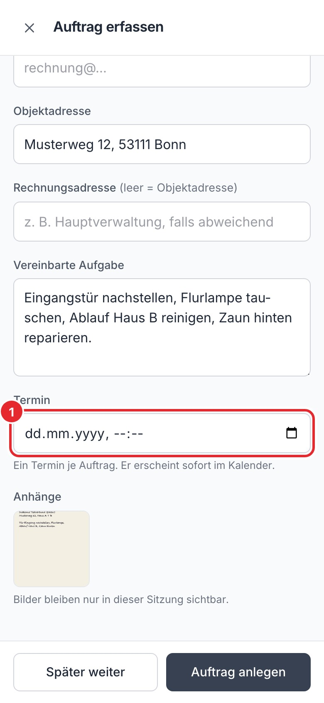
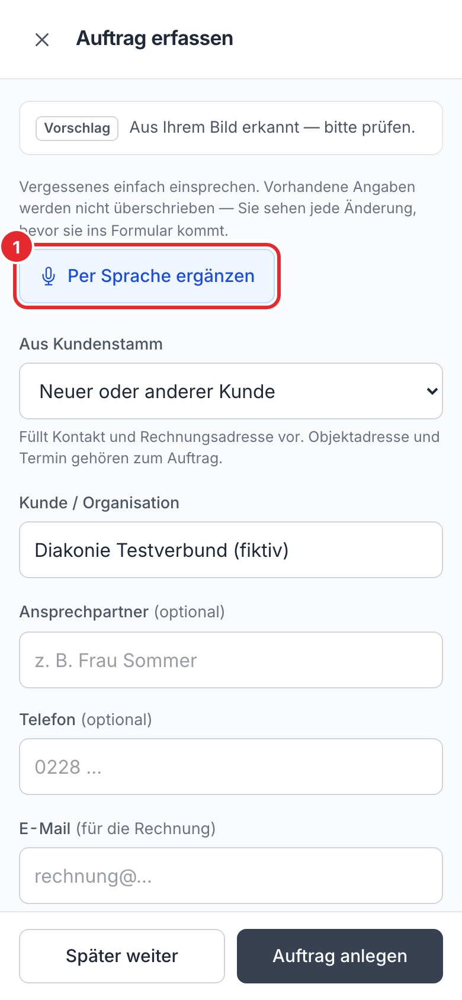
Nichts wird heimlich überschrieben
Die App zeigt dir, was sie aus deiner Sprache ergänzen will. Mit den Häkchen wählst du aus, dann Übernehmen 1. Was schon im Formular stand, bleibt, außer du willst es ersetzen.
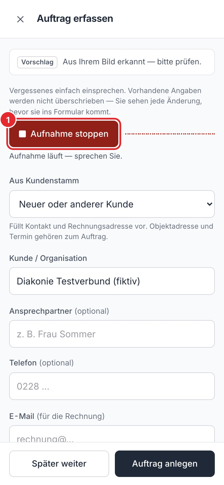
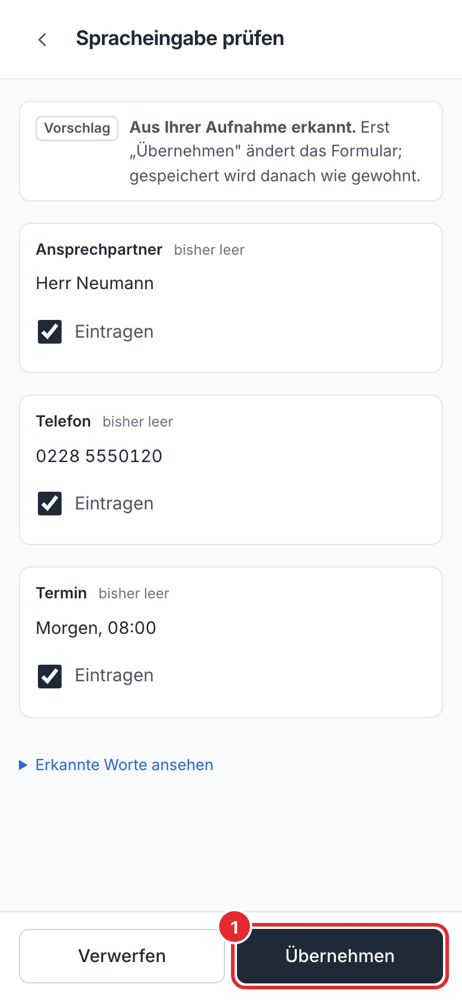
Rechnungsadresse und anlegen
- Objektadresse = wo du arbeitest.
- Rechnungsadresse 1 = wohin die Rechnung geht, z. B. die Verwaltung oder Hauptstelle. Leer lassen, wenn es dieselbe ist.
- Bei einem neuen Kunden steht unten noch „Kunde für weitere Aufträge merken“. Häkchen setzen, dann kannst du ihn beim nächsten Mal oben unter „Aus Kundenstamm“ auswählen.
Zum Schluss Auftrag anlegen 1. Keine Zeit? Später weiter hebt den halben Auftrag auf — auch wenn du die App zumachst.
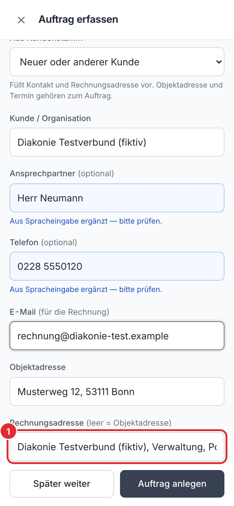
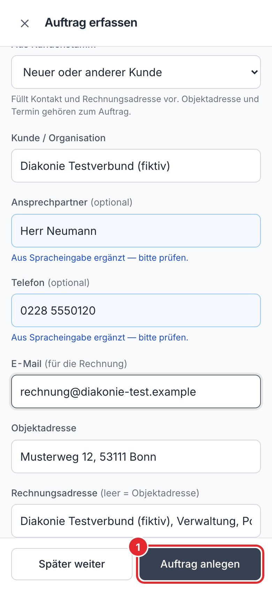
2Vor Ort dokumentieren
Nach dem Anlegen öffnet sich die Auftragsakte. Das ist immer dieselbe Akte, egal ob du von der Startseite, aus „Aufträge“ oder aus dem Kalender kommst.
Arbeit starten
Wenn du beim Kunden bist: unten auf Arbeit starten 1. Der Auftrag steht dann auf „In Arbeit“.

Die Knöpfe zum Dokumentieren
- 1Foto aufnehmen — Kamera geht auf. Die App gibt dem Foto einen Namen, z. B. „Zaun hinten, Pfosten schief“.
- 2Bilder hinzufügen — Fotos, die du schon gemacht hast.
- 3Einsprechen — großes Aufnahmefenster, für längere Berichte.
- 4Notiz schreiben — kurz etwas festhalten.
- 5Zeit erfassen — Stunden und wofür.
- 6Material erfassen — was du verbaut hast. Den Preis gibst du erst bei der Rechnung ein.
- 7Schnell diktieren — der schnellste Weg: einmal tippen, alles sagen, nochmal tippen.
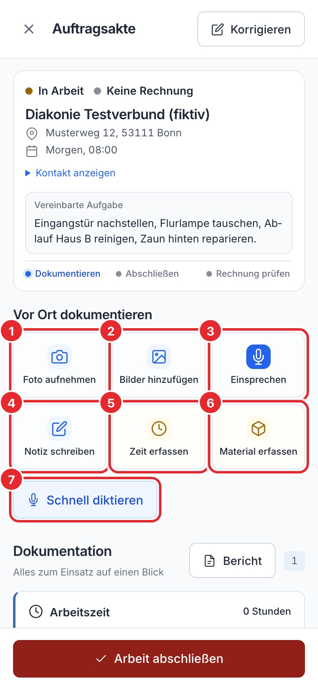
Schnell diktieren: alles in einem Satz
Tipp auf Schnell diktieren und erzähl einfach, was du gemacht hast. Zum Beispiel:
„Tür nachgestellt, Licht getauscht, Ablauf gereinigt und den Zaun repariert. Insgesamt viereinhalb Stunden, zwei Zaunlatten verbaut. Der zweite Zaunpfosten wackelt noch. Als Aufgabe: Zaunpfosten nachbestellen.“
Fertig? Nochmal auf den roten Knopf Aufnahme stoppen 1.
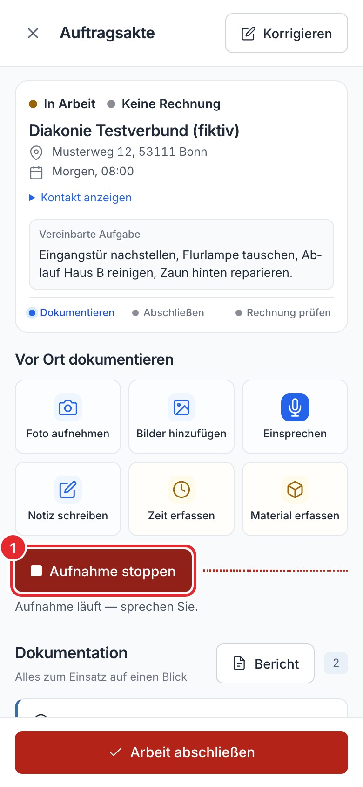
Prüfen und übernehmen
Die App sortiert, was du gesagt hast: ausgeführte Arbeit, Stunden, Material, offener Punkt. Du kannst alles noch ändern.
Hast du „als Aufgabe …“ gesagt, steht das unter „Als Aufgabe gesagt“ mit Häkchen 1. Das landet dann bei den Aufgaben zum Abhaken, nicht auf der Rechnung.
Alles gut? Übernehmen 2. Noch etwas vergessen? Weiteres ergänzen und weitersprechen.
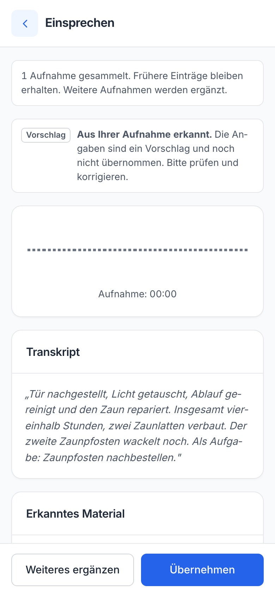

„Wohin gehört das?“
Sagst du etwas, das keine Arbeit, Zeit oder Material ist — z. B. „Der Hausmeister hat den Keller aufgeschlossen“ —, fragt die App nach. Du tippst einfach, wohin es soll: Als Notiz 1, als offenen Punkt, als wichtigen Hinweis (rot, nie auf der Rechnung) oder als Aufgabe.
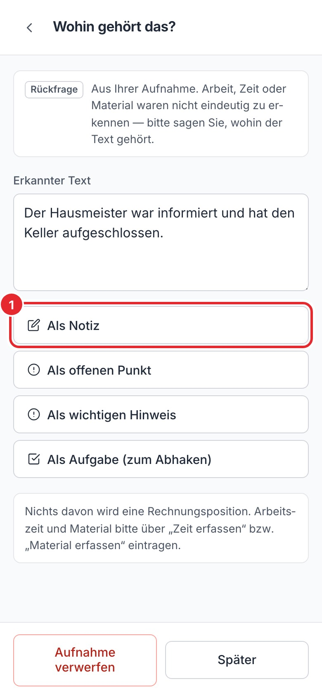
Material von Hand
Über Material erfassen: Bezeichnung 1, Menge, Einheit, optional Lieferant und Kostenstelle. Dann Speichern 2. Zeit erfassen funktioniert genauso.
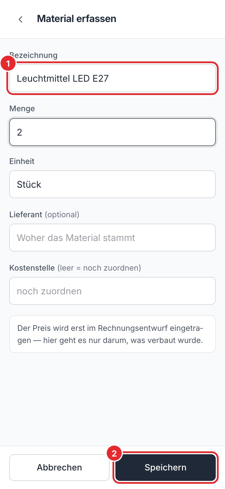
3Zwischendurch: anderer Auftrag, raus und wieder rein
Du hast gefragt, ob das geht, wenn du zwischendurch was anderes machst. Ja. Mehrere Aufträge können gleichzeitig „In Arbeit“ sein. Du kannst jederzeit rausgehen, bei einem anderen Auftrag etwas dokumentieren und wieder zurück.
Schnell eine Notiz, ohne die Akte zu öffnen
Auf der Startseite steht der Auftrag, an dem du gerade bist, unter „Aktuell in Arbeit“. Mit Notiz 1 schreibst oder sprichst du kurz etwas dazu — z. B. „Mieter Haus A fragt nach neuem Briefkastenschild“.
Weiter unten, unter „Weitere laufende Arbeiten“ 1, stehen deine anderen Aufträge, die auch in Arbeit sind. Antippen öffnet die Akte.
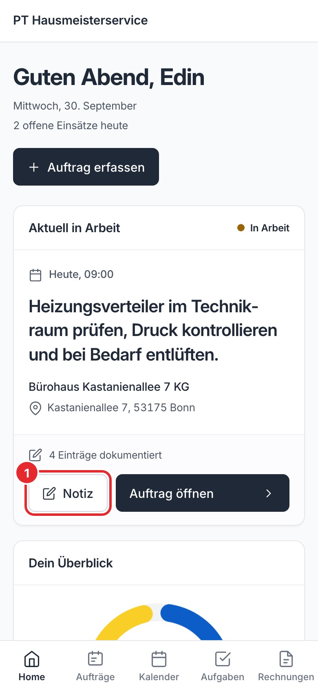
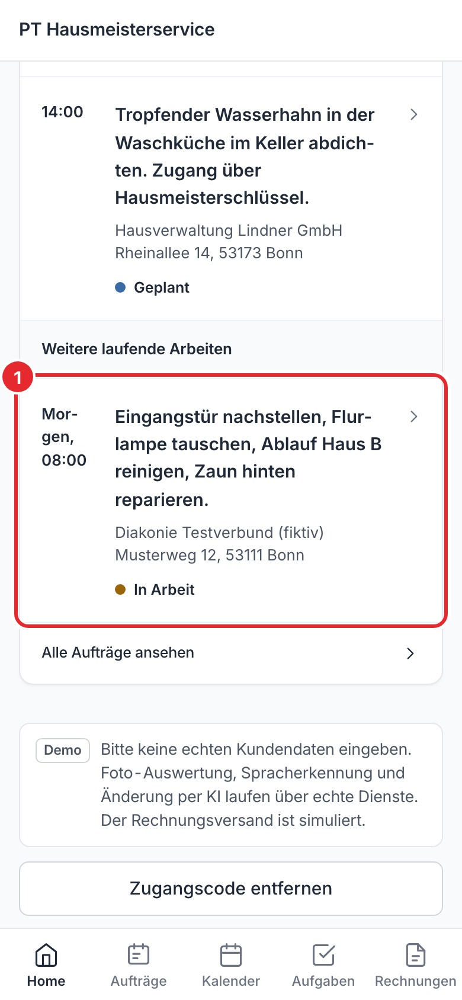
Notiz — und gleich als Aufgabe merken
Soll daraus etwas zum Erledigen werden, setz das Häkchen Auch als Aufgabe zum Abhaken merken 1. Dann Notiz speichern 2.
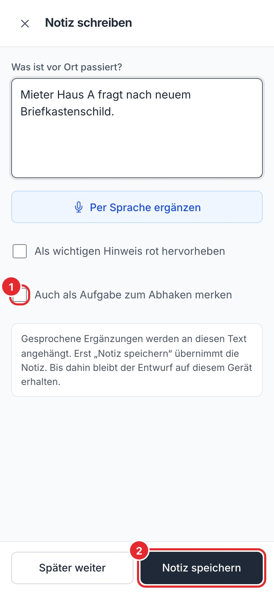
Es geht nichts verloren, wenn du rausgehst:
- Eine Aufnahme, die du noch nicht übernommen hast, bleibt gespeichert. Wenn du die Akte wieder öffnest, steht oben: „Eine Aufnahme ist noch nicht übernommen — Prüfen / Verwerfen“.
- Eine angefangene Notiz bleibt als Entwurf, bis du sie speicherst oder verwirfst.
- Ein halb ausgefüllter Auftrag bleibt mit „Später weiter“ liegen.
4Aufgaben zum Abhaken
Unten in der Leiste: Aufgaben. Hier landet alles, was du noch erledigen musst, das aber keine Arbeit beim Kunden ist — „Zaunpfosten nachbestellen“, „Silikon kaufen“.
- 1 Abhaken, wenn erledigt. Abgehaktes bleibt einen Tag sichtbar (falls du dich vertippt hast) und verschwindet dann.
- 2 Neue Aufgabe direkt hier eintippen oder mit „Per Sprache“ sagen, optional einem Auftrag zuordnen, dann „Hinzufügen“.
- Tippst du auf den blauen Kundennamen, öffnet sich die Akte.
Aufgaben entstehen auch, wenn du beim Diktieren „als Aufgabe …“ sagst, oder mit dem Häkchen bei einer Notiz.
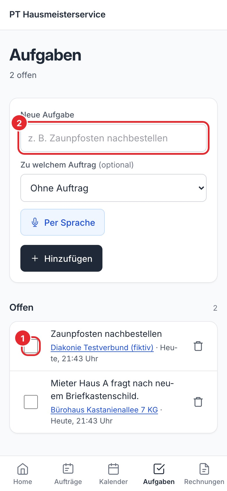
Zurück zum Auftrag
Unten auf Aufträge, oben In Arbeit 1, dann den Auftrag antippen 2. Du bist wieder in der Akte, alles ist noch da.
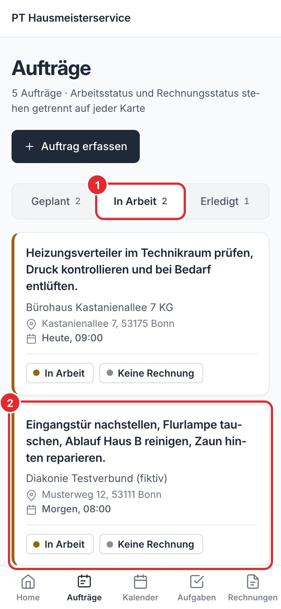
5Mehrere Arbeiten & Kostenstellen
Dein Fall: An einem Tag fünf Arbeiten, jede für eine andere Kostenstelle. So teilst du das auf.
„Tätigkeiten & Kostenstellen“
In der Akte, weiter unten unter „Dokumentation“, siehst du alles auf einen Blick. Bei „Arbeitszeit“ tippst du auf Tätigkeiten & Kostenstellen 1.
(2 Bericht kommt gleich in Schritt 6.)
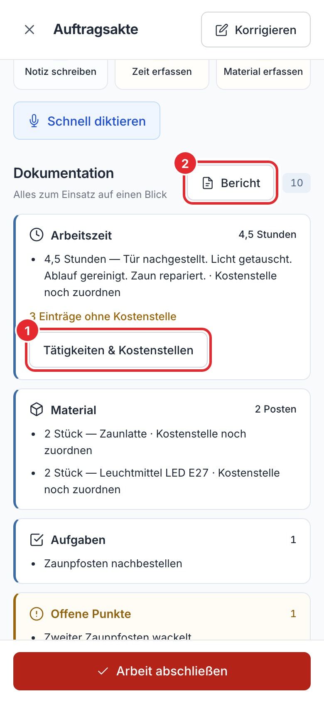
Teilen
Deine 4,5 Stunden stehen noch in einer Zeile. Tipp auf Teilen 1. Die App macht aus deinem Satz vier Zeilen: Tür, Licht, Ablauf, Zaun.
Zu jeder Zeile trägst du die Stunden 1 ein (nur wenn du sie weißt — sonst leer lassen, die App schätzt nie) und die Kostenstelle 2. Dann Aufteilen.

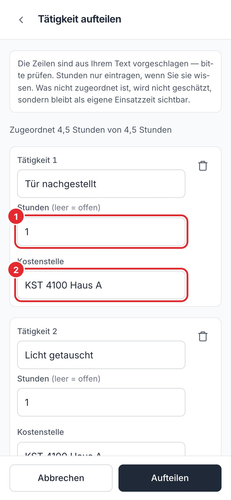
Material auch zuordnen, dann fertig
Auch jedes Material bekommt eine Kostenstelle. Wenn alles passt: Fertig 1. Die Kostenstellen stehen später an jeder Zeile im Bericht und auf der Rechnung.
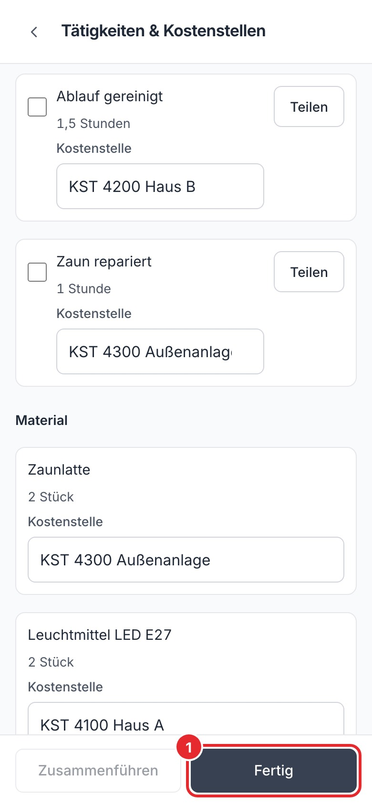
6Einsatzbericht & Unterschrift
Der Bericht macht sich selbst
In der Akte auf Bericht. Die App baut aus deiner Dokumentation einen Einsatzbericht mit deinem Logo: Kunde, Objekt, Datum, jede Arbeit mit Stunden und Kostenstelle, Material, offene Punkte, Fotos und Notizen. Welche Fotos und Notizen rein sollen, wählst du unter „Was steht im Bericht?“.
- 1 Bestätigen lassen — der Kunde unterschreibt.
- 2 Drucken / PDF — dann „Als PDF sichern“ bzw. „Teilen“. So hast du den Bericht als PDF, um später nachzusehen, wann du was gemacht hast und wie lange es gedauert hat.
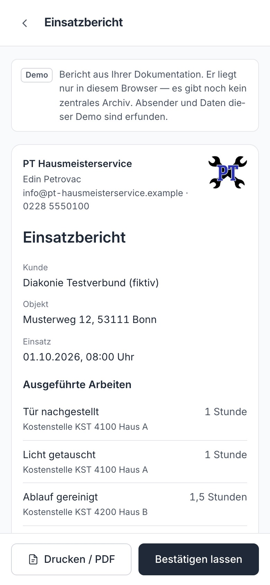
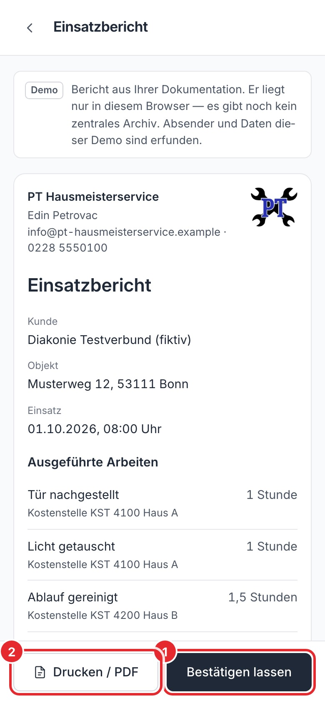
Unterschrift mit dem Finger
Gib dem Kunden das Handy: Name 1, mit dem Finger unterschreiben 2, Speichern 3.
Die unterschriebene Fassung bleibt danach genau so. Dokumentierst du später noch etwas, steht es als „Nachtrag“ darunter und kann nochmal unterschrieben werden.
Die Unterschrift ist im Moment nur zum Ausprobieren, nicht rechtsverbindlich.
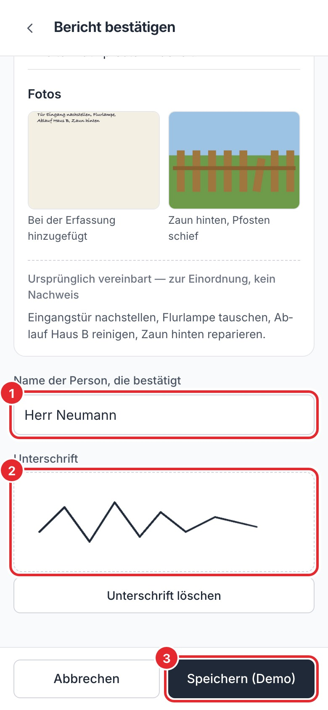
7Arbeit abschließen
Unten in der Akte auf Arbeit abschließen. Du siehst noch einmal, was dokumentiert ist. Ins Feld Ergebnis für den Kunden 1 schreibst du in einem Satz, was erledigt ist (die App schlägt schon etwas vor). Offene Punkte werden nicht berechnet.
Dann Als erledigt markieren 2.


8Rechnung
Rechnung erstellen
Nach dem Abschließen: Rechnung erstellen 1. Die Rechnung entsteht aus dem, was du gemacht und dokumentiert hast — nicht aus dem, was ursprünglich vereinbart war.

Preise eintragen oder ändern lassen
Jede Zeit und jedes Material ist eine Zeile. Fehlt ein Preis, ist er markiert, und es gibt keinen Gesamtbetrag, bis alles da ist. Preise trägst du ins Feld Einzelpreis 1 ein.
Oder du tippst auf das Funken-Symbol 2 und schreibst einfach, was anders sein soll: „Setz den Stundensatz auf 62 Euro“. Du siehst vorher/nachher und tippst Übernehmen.
Die 58 € sind nur ein Beispiel-Stundensatz. Später kommen deine Preise aus deiner Liste.
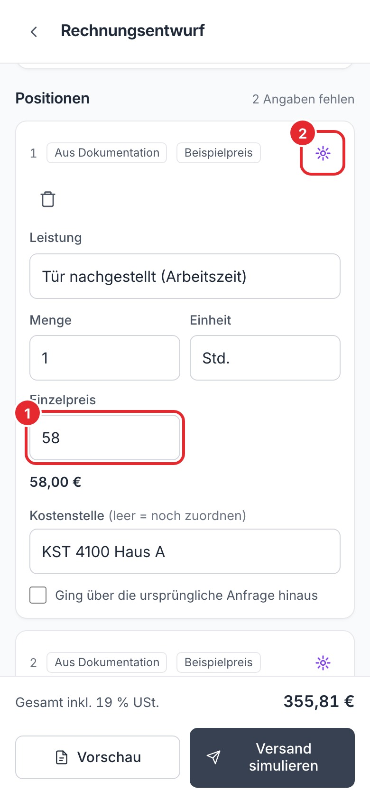
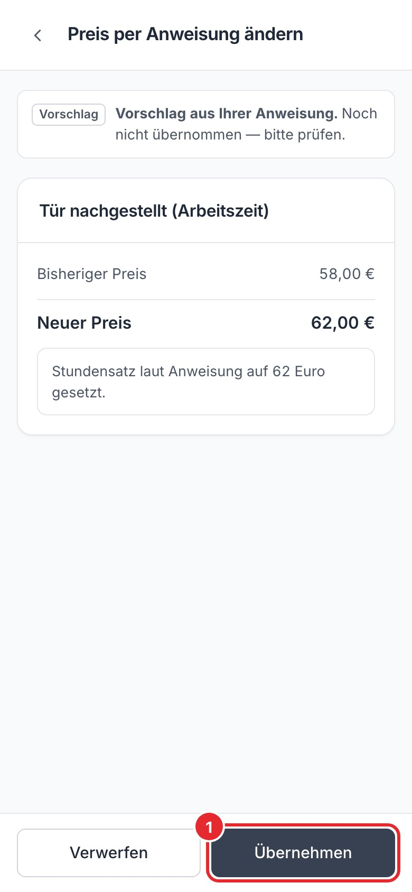
Vorschau — und noch etwas ändern
Vorschau zeigt die fertige Rechnung. Unter „Noch etwas ändern?“ 1 schreibst du frei, was nicht passt — „Die Zaunlatten haben 12 Euro gekostet“ — und tippst auf Senden 2. Wieder: erst Vorschlag, dann du entscheidest.
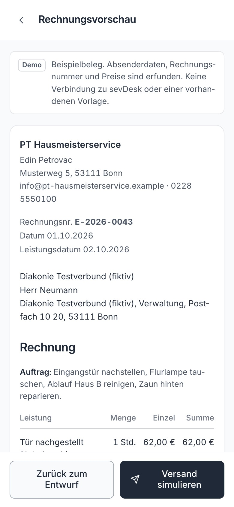
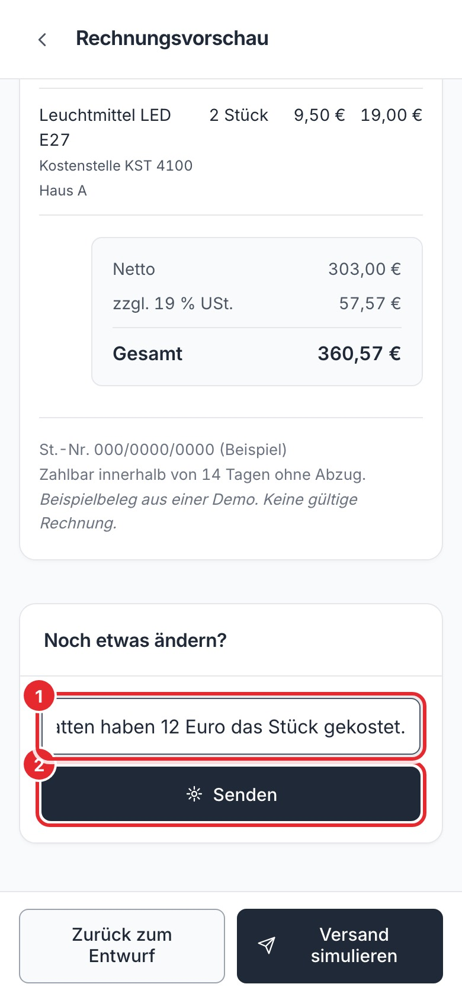
Rechnung stellen
Versand simulieren 1, dann Demo-Versand bestätigen. In der Probe geht nichts raus. Später legt sevDesk die Rechnung an und verschickt sie.
Danach ist die Rechnung festgeschrieben und ändert sich nicht mehr. Wenn der Kunde bezahlt hat: Zahlung vermerken — am PC siehst du das Geld dann auf der Startseite unter „Geldverlauf“ (am Handy ist der Geldverlauf ausgeblendet).
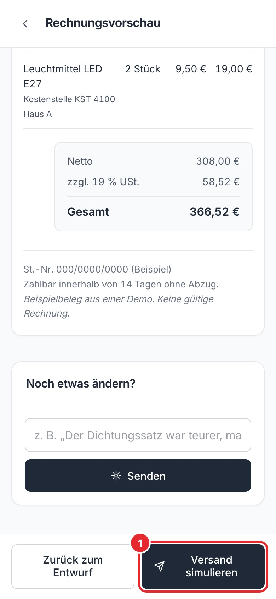
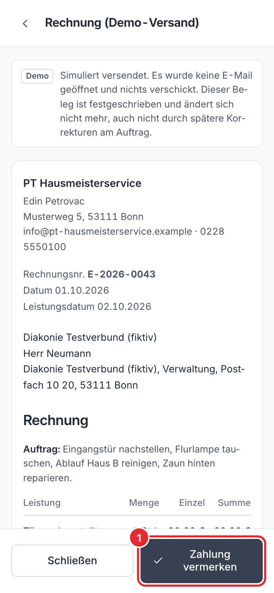
9Preisliste aus sevDesk
Deine Artikel aus sevDesk — Stundensätze, Pauschalen, Preise pro m² — liest du einmal ein. Danach setzt die App die Preise selbst ein, sobald du einen Artikel wählst. Sie ordnet aber nie selbst zu: Welcher Artikel zu welcher Arbeit gehört, entscheidest du.
Einlesen
Rechnungen → Preisliste → CSV-Datei wählen. Vor dem Übernehmen siehst du, wie viele Artikel gelesen wurden und — bei einer zweiten Datei — welche Preise sich ändern.
Standard-Stundensatz
In der Preisliste wählst du deinen normalen Stundensatz. Er steht dann bei jeder Arbeitszeit in neuen Rechnungen statt des Beispielpreises.
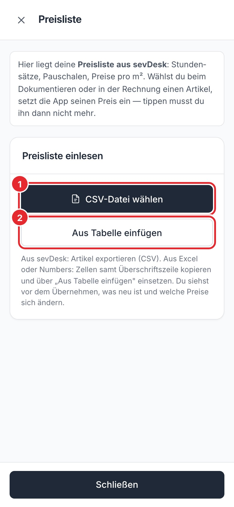
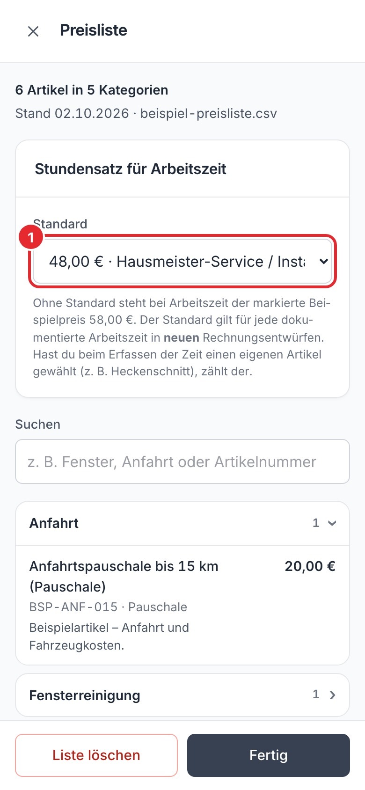
Aus der Liste wählen
- Material erfassen und Zeit erfassen: „Aus Preisliste wählen“ — auch für Leistungen nach m² oder Pauschalen.
- Rechnungsentwurf: „Aus Preisliste“ fügt eine Position hinzu, das Listen-Symbol an einer Position holt deren Preis aus der Liste.
- KI-Preisvorschlag: Beim Erstellen der Rechnung sucht die KI für jede Position den passenden Artikel aus deiner Liste. Du siehst eine Prüfliste und bestätigst mit einem Tipp. Erst danach steht der Gesamtbetrag fest.
- Am Ende ändern: In der Vorschau unter „Noch etwas ändern?“ tippen oder einsprechen — auch mehrere Dinge auf einmal und Artikel aus deiner Liste.
- Ohne deine Bestätigung bekommt nichts einen Preis aus der Liste — die App rät nicht.
Den ganzen Ablauf mit deiner eigenen Datei findest du im Übungsauftrag, Teil I.
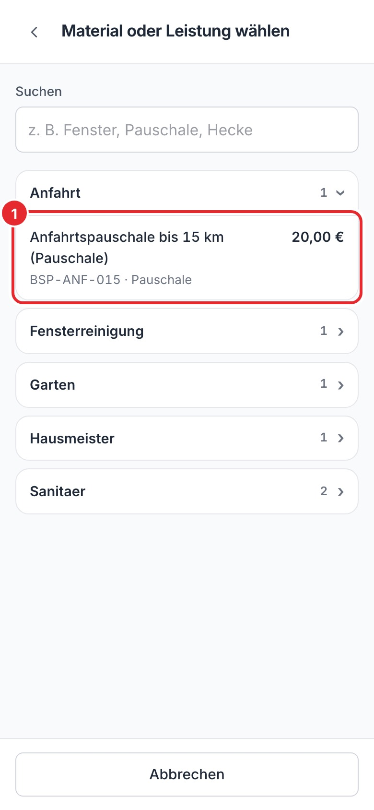
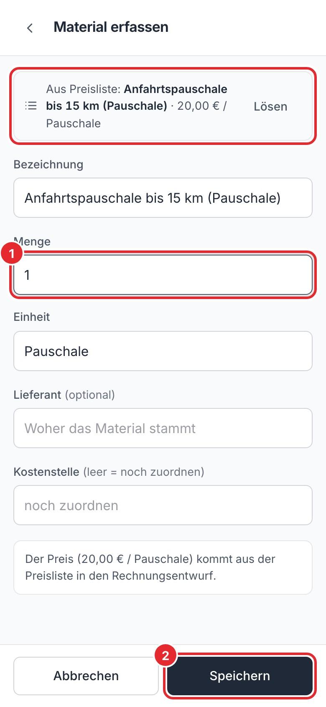
10Überblick behalten
Unten in der Leiste:
- Home — was heute ansteht, was gerade in Arbeit ist, welche Rechnungen noch raus müssen; am PC zusätzlich der Geldverlauf.
- Aufträge — Geplant, In Arbeit, Erledigt.
- Kalender — alle Termine. Antippen öffnet die Akte.
- Aufgaben — zum Abhaken.
- Rechnungen — alle Rechnungen, und darunter Aufträge, die erledigt sind, aber noch keine Rechnung haben.
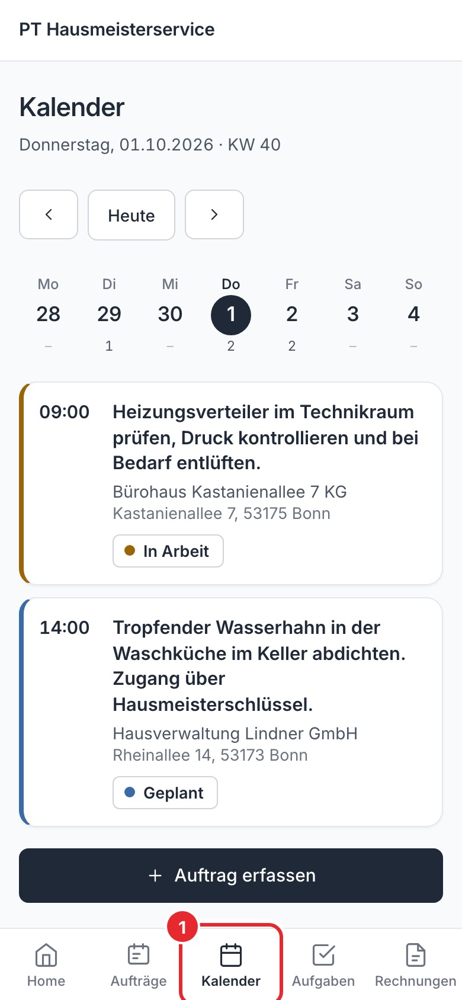
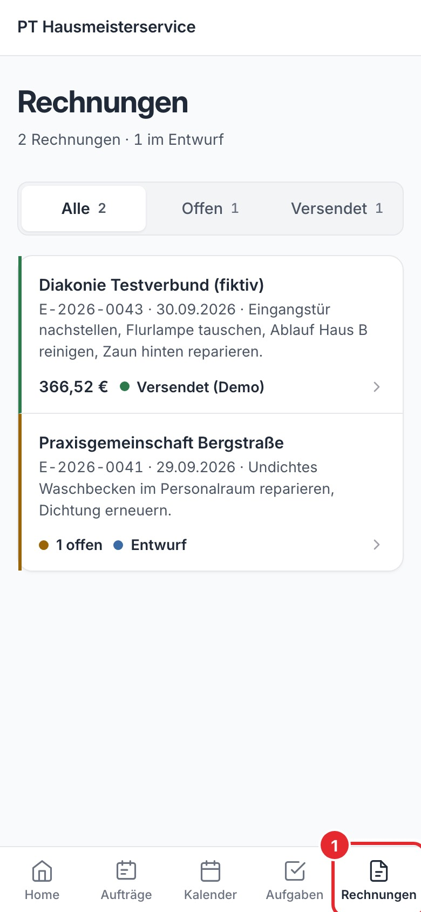
Was heute noch nicht geht — damit du dich nicht wunderst:
- Zuschläge in Prozent (Wochenende, Nacht) und der Mindestauftragswert werden noch nicht automatisch berechnet.
- Die App teilt ein Diktat mit mehreren Arbeiten noch nicht von selbst auf. Das machst du mit „Teilen“.
- Ein Auftrag hat im Moment genau eine Rechnung.
- Handy und PC haben noch nicht dieselben Daten.
- Rechnungsversand und Unterschrift sind zum Ausprobieren.
11Und jetzt du
Spiel einmal selbst einen erfundenen Auftrag durch und probier dabei jede Funktion einmal aus:
- Auftrag per Foto oder Einsprechen anlegen, Fehlendes mit Per Sprache ergänzen nachtragen.
- Arbeit starten, ein Foto machen, mit Schnell diktieren erzählen, was du gemacht hast — mit „als Aufgabe …“ am Ende.
- Einen zweiten Auftrag anlegen und starten. Zwischendurch rausgehen, beim anderen eine Notiz machen, zurückgehen.
- Unter Aufgaben etwas abhaken.
- Arbeiten mit Teilen auf Kostenstellen verteilen.
- Bericht ansehen, unterschreiben lassen, als PDF sichern.
- Abschließen, Rechnung erstellen, einen Preis per Funken-Symbol ändern, Versand simulieren.
Danach: sag Matthias, was du denkst
Was war einfach, was umständlich, was fehlt dir? Im Fragebogen kannst du alles aufschreiben oder einsprechen, Bilder und Dateien anhängen und mit dem Assistenten Ideen sammeln. Ein Knopf schickt alles an Matthias.
Zum Fragebogen Zum ÜbungsauftragAlle Namen, Adressen und Zahlen auf den Bildern sind erfunden. Stand: 30.09.2026 · M&H Assistenz